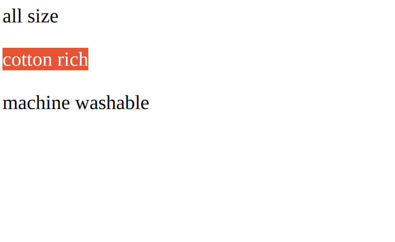

v-for used to iterate over a list and display the corresponding html
elements and content accordingly.
:key is used by vue to track the elements in the list, I think it uses it to see
if a element which is already in the dom needs to be updated.
<div id="app">
<div v-for="detail in details" :key="detail.id">
<p>{{detail.feature}}</p>
</div>
</div>
main.js
var app = new Vue({
el: '#app',
data: {
product: 'socks',
baseImage: './grey-sock.jpeg',
stockQuantity: 4,
details: [
{id: 1, feature: "all size"},{id:2, feature: "cotton rich"},
{id:3, feature: "machine washable"}
]
}
}
)
on Browser
